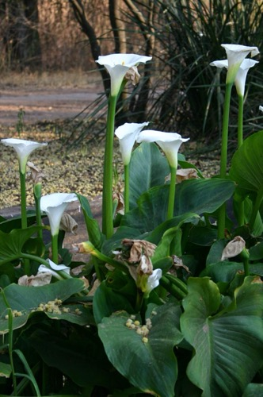
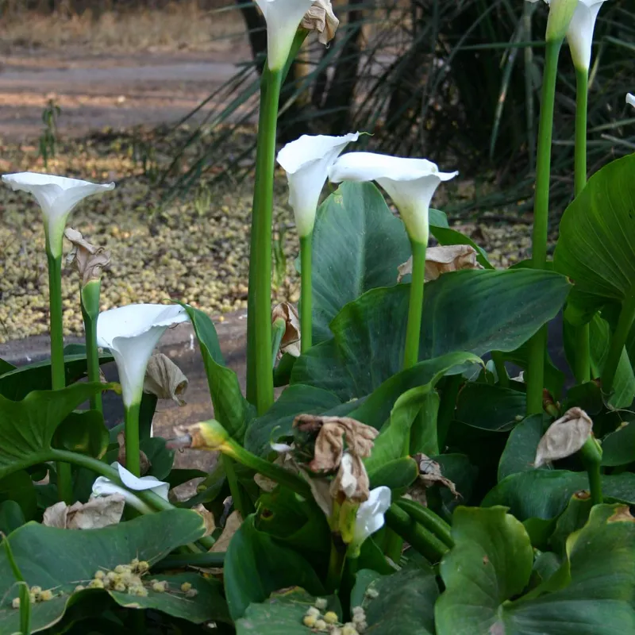

Espera tudo no passo 2
A tela "Identificando…" segura até ter espécie e foto (≈5–8 s no total, com as etapas marcando ✓). O modal abre já completo. Mais simples.
Caminho pela foto da galeria. Role para o lado. Embaixo, uma escolha sobre a espera.
1Escolhe nome ou foto (igual hoje)
Adicionar com IA
Digite o nome de uma planta ou tire uma foto. A gente encontra a espécie e como cuidar dela.
2Procurando: a foto dela no centro

A tela inteira vira o "procurando". Quem digitou o nome vê um ícone de lupa no lugar da foto.
3Modal: compara as duas fotos

"Não é essa" volta ao passo 1 com uma dica. O ✕ só fecha. Nos dois casos nada é salvo.
4Pronto: sem toast, a notícia fica na tela
A foto no círculo é a que vai para o jardim. O aviso de "entrou no catálogo" vira um selo fixo; não some e não fica embaixo do notch.
3b · Pelo nome: só a referência
1b · Depois de "Não é essa"
Adicionar com IA
Buscar e conferir a foto de referência leva uns 3–5 s a mais. Clique na que preferir.